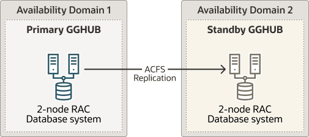

Task 2: Prepare a Primary and Standby Base System for GGHub
Perform the following steps to complete this task:
- Step 2.1 - Deploy Oracle 2-node Cluster System
- Step 2.2 - Download the Required Software
- Step 2.3 - Configure Oracle Linux to use the Oracle Public YUM Repository
Step 2.1 - Deploy a Oracle 2-Node Oracle Grid Infrastructure System
Deploy a minimum of two GGHubs (primary and standby). Each GGHub must be deployed as a 2-node Oracle Grid Infrastructure system as described in Installing Oracle Grid Infrastructure.
Figure 25-3 Oracle GoldenGate Hub Hardware Architecture

Step 2.2 - Download the Required Software
-
As the
rootOS user on all GGHub nodes, create the staging and scripts directories:[root@gghub_prim1 ~]# mkdir -p /u01/oracle/stage mkdir /u01/oracle/scripts chown -R oracle:oinstall /u01/oracle chmod -R g+w /u01/oracle chmod -R o+w /u01/oracle/stage -
As the
opcOS user on all GGHub nodes, download the following software in the directory /u01/oracle/stage:- Download the latest Oracle GoldenGate 21c (or later release) Microservices software from My Oracle Support Doc ID 2193391.1.
- Download the Oracle Grid Infrastructure Standalone Agents for Oracle Clusterware 19c, release 10.2 or later, from Oracle Grid Infrastructure Standalone Agents for Oracle Clusterware.
- Download the python script (
secureServices.py) from My Oracle Support Document 2826001.1 - Download the Oracle GGHUB Scripts from My Oracle Support Document 2951572.1
-
As the
gridOS user on all GGHub nodes, unzip the GGhub scripts file downloaded from My Oracle Support Document 2951572.1 into the directory/u01/oracle/scripts.Place the script in the same location on all primary and standby GGhub nodes
[grid@gghub_prim1 ~]$ unzip -q /u01/oracle/stage/gghub_scripts_<YYYYYMMDD>.zip -d /u01/oracle/scripts/
Step 2.3 - Configure Oracle Linux to use the Oracle Public YUM Repository
The Oracle Linux yum server hosts software for Oracle Linux and compatible distributions. These instructions help you get started configuring your Linux system for Oracle Linux yum server and installing software through yum.
For example, as the root OS user in all GGHub systems, create
the file /etc/yum.repos.d/oracle-public-yum-ol7.repo with the following
contents:
[opc@gghub_prim1 ~]$ sudo su -
[root@gghub_prim1 ~]#
cat > /etc/yum.repos.d/oracle-public-yum-ol7.repo <<EOF
[ol7_latest]
name=Oracle Linux $releasever Latest ($basearch)
baseurl=http://yum.oracle.com/repo/OracleLinux/OL7/latest/\$basearch
gpgkey=file:///etc/pki/rpm-gpg/RPM-GPG-KEY-oracle
gpgcheck=1
enabled=1
EOF